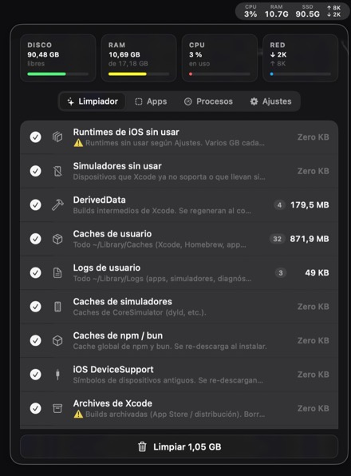

Your Mac is hiding gigabytes you have never seen.
Caches, leftovers from apps you deleted, development environments and temp folders that grow on their own. DevToolbox finds them, tells you what they weigh, and clears them when you say so.
DevToolbox is a menu bar utility for macOS 14 and later that frees up space by removing the temporary files left behind by Xcode, iOS and Node.js development.
One-time payment, €5 plus tax. The download is the full app: 14 days with everything unlocked, no card, no sign-up.

What you get back
42,4 GB
reclaimable
-
~/Library/Developer/Xcode/DerivedData24.8 GB -
~/Library/Developer/CoreSimulator11.2 GB -
~/Library/Developer/Xcode/iOS DeviceSupport6.4 GB
The first three are usually 80% of the total.
No surprises
It shows first, deletes second.
Nothing disappears without you seeing it first. It scans when you open it, tells you what each category weighs and how many items are inside, and only then offers the button.
Everything goes to the Trash. Change your mind and it is right there.
Scans on open
The panel arrives with the numbers already in. No button to press, no thirty seconds watching a spinner.
Itemised list
Before you confirm you see exactly what goes: paths, sizes and file counts for every category you ticked.
What it does
Six tools, one icon.
All from the menu bar, without opening another app.
Cleaner
DerivedData, Xcode and Homebrew caches, logs, SwiftPM, npm and bun,
build artefacts and node_modules across your projects.
Auto‑clean
Daily, every three days or weekly, only the categories you tick. You find out from the summary, not from running out of disk.
Simulators
Through simctl, never by deleting folders by hand. It spots
the ones you never boot and old runtimes, always keeping the newest.
Uninstaller
Dragging to the Trash leaves preferences, caches and support files all
over ~/Library. Here you see the leftovers and they go too.
Metrics and processes
CPU, memory, disk and network right in the bar. Plus the hungriest processes, with a button to end them.
Keep awake
For long builds and local CI. Your Mac will not doze off halfway and you never touch the energy settings.
Pricing
You pay once.
No subscription, no account, no yearly reminder.
Lifetime licence
- Every feature, forever
- Updates included
- Use it on all your Macs
- Offline: the licence is verified on your Mac
- 14-day trial before you pay
Paid through Stripe. Your local taxes are calculated at checkout.
Your key arrives by email straight away.
DevToolbox Lite · free
CPU, memory, disk and network monitoring with history and battery. A folder analyser that finds large forgotten files and duplicates. A warning when disk space runs low.
On the App Store
There is a free version.
It does what Apple's sandbox allows. Cleaning DerivedData or uninstalling apps is out of its reach by system design, not by choice, which is why the full version ships separately.
Questions
What people usually ask.
Why is it not on the App Store?
Because it would not fit. App Store apps run in a sandbox that stops them
reading ~/Library, running simctl or touching
/Applications. Whatever we shipped there could not clean
anything. What does fit is published as DevToolbox Lite.
Is it safe to install outside the App Store?
It is signed with a Developer ID and notarised by Apple, so macOS opens it without warnings. Every update downloads signed, and the app refuses it if the signature does not match.
What exactly does it delete?
Only what you tick, and always to the Trash. Before confirming you see the
full list with paths and sizes. Simulators are removed with
simctl, the official route: deleting their folders by hand
leaves Xcode inconsistent.
Does the licence work on several Macs?
Yes. It belongs to you, not to a machine, and it is verified offline.
What if I do not like it?
You get 14 days with everything unlocked before paying, no card and no sign-up. If you still regret it, write to me and I will refund you.